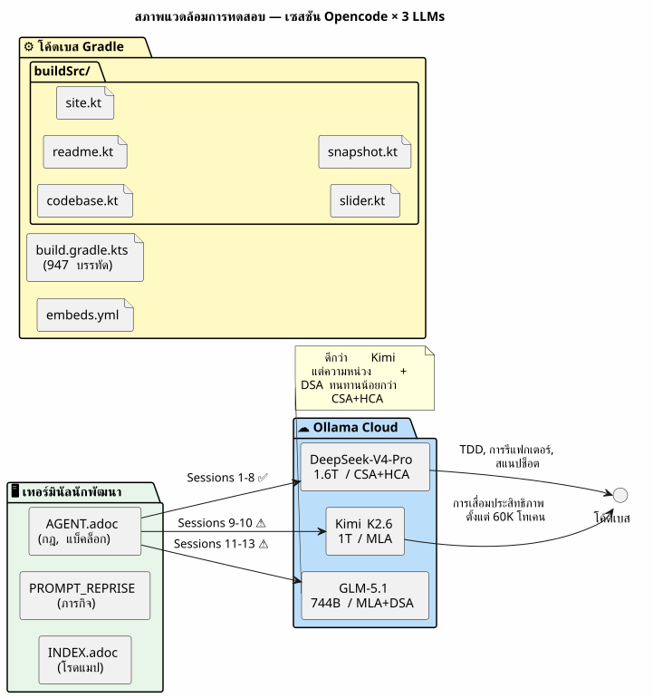
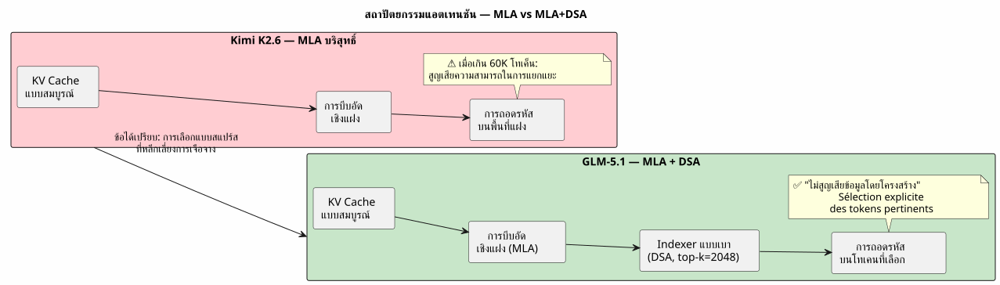
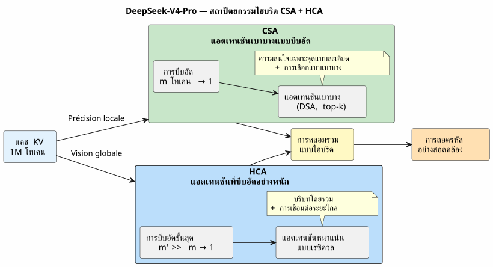
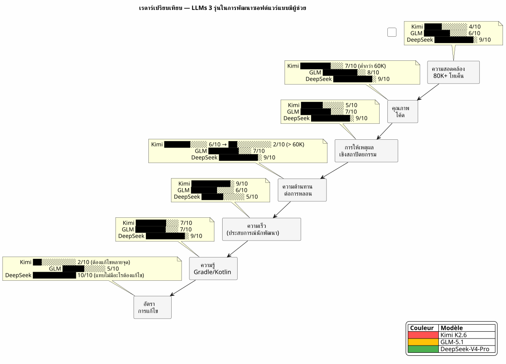
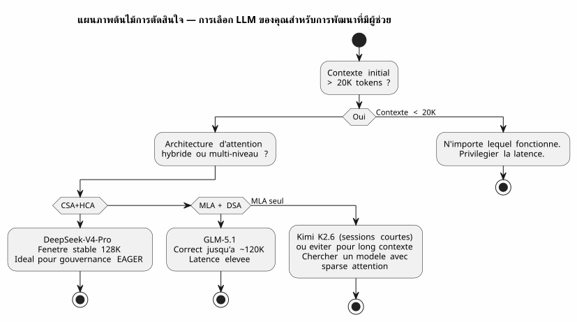

DeepSeek-V4-Pro, Kimi K2.6, GLM-5.1 : สาม LLM กับการทดสอบ Vibe Coding ในบริบทขนาดยาว
เผยแพร่เมื่อ 28 April 2026
- บริบท: ไม่ใช่แท่นทดสอบ แต่เป็นไซต์งานก่อสร้าง
- สภาพแวดล้อมการทดสอบของฉัน
- ตารางการประเมิน
- รอบที่ 1 : Kimi K2.6 — การออกตัวผิด
- รอบที่ 2 : GLM-5.1 — นักสู้ผู้ทรงเกียรติ
- รอบที่ 3 : DeepSeek-V4-Pro — เครื่องจักรสงคราม
- การเผชิญหน้า: ตัวชี้วัดเปรียบเทียบ
- ทำไม DeepSeek-V4-Pro จึงชนะในการพัฒนาซอฟต์แวร์
- บทเรียนที่ได้เรียนรู้: วิธีเลือก LLM ของคุณสำหรับ Vibe Coding
- แล้วการกำกับดูแลเอเจนต์ในเรื่องทั้งหมดนี้ล่ะ?
- แหล่งข้อมูลทางเทคนิค
- บทสรุป: ทางเลือกของช่างฝีมือ
สงครามของ LLMs ยังเกิดขึ้นในเทอร์มินัลของนักพัฒนาด้วย ไม่ใช่บนเบนช์มาร์กทางวิชาการที่ไร้ความหมาย ในชีวิตจริง: พรอมต์ขนาด 30,000 โทเคน การกำกับดูแลเอเจนต์ในรูปแบบ AsciiDoc ปลั๊กอิน Gradle Kotlin DSL ที่ต้องดีบัก และเซสชันที่ต่อเนื่องกันตลอดสามสัปดาห์ ฉันได้ทดสอบ DeepSeek-V4-Pro, Kimi K2.6 และ GLM-5.1 ให้คุณแล้ว นี่คือคำตัดสิน พร้อมหลักฐานทางเทคนิคประกอบ
- ก็อก ๆ
-
Please provide the French text you’d like me to translate into Thai.
บริบท: ไม่ใช่แท่นทดสอบ แต่เป็นไซต์งานก่อสร้าง
เมื่อสามสัปดาห์ก่อน ฉันกำลังทำงานเกี่ยวกับ`codebase-gradle`, ระบบ meta-build ของฉันที่รวมศูนย์การกำหนดค่า YAML ของสี่โปรเจกต์ ได้แก่ ตัวสร้าง README ด้วย PlantUML, ตัวสร้างสไลด์ AsciiDoc, เว็บไซต์สแตติก JBake และแชทบอท LLM เอเจนต์ Opencode ซึ่งกำกับด้วยระเบียบวิธีไฟล์เอเจนต์ในรูปแบบ AsciiDoc ของฉัน โหลดบริบท EAGER ประมาณ 30K โทเคนทุกครั้งที่เริ่มเซสชัน — กฎสัมบูรณ์, แบ็กлог, ประวัติของ 10 เซสชันล่าสุด
บนพื้นที่นี้เองที่ฉันได้เปรียบเทียบสามโมเดล:
-
Kimi K2.6(Moonshot AI, พารามิเตอร์ 1T / เปิดใช้งาน 32B, คอนเท็กซ์สูงสุด 256K, MLA) - GLM-5.1(Zhipu AI/มหาวิทยาลัยชิงหัว, พารามิเตอร์ 744B / DSA, บริบทสูงสุด 200K) - DeepSeek-V4-Pro(DeepSeek, พารามิเตอร์ 1.6T / เปิดใช้งาน 49B, บริบทสูงสุด 1M, CSA+HCA)
ทั้งหมดให้บริการผ่าน Ollama บนเซิร์ฟเวอร์คลาวด์ ทั้งหมดอยู่ในโหมด thinking (เปิดขั้นตอนการคิดวิเคราะห์) โจทย์คือ การสร้างโค้ดที่ถูกต้อง รักษาความสอดคล้องตลอดเซสชันที่ยาวนาน และไม่หลอนเมื่อบริบทเกิน 80K โทเคน
สภาพแวดล้อมการทดสอบของฉัน

ทุกเซสชันเริ่มต้นด้วยบริบท EAGER ประมาณ 30K โทเค็น:`AGENT.adoc`(287 บรรทัด),PROMPT_REPRISE.adoc(51 บรรทัด),.agents/INDEX.adoc(218 บรรทัด),LAZY_EAGER_ESSENTIALS.adoc(50 บรรทัด) บริบทขยายตัวอย่างรวดเร็วเมื่อมีการแลกเปลี่ยน — เซสชันทั่วไปที่มี 10 ข้อความเพิ่ม 15-20K โทเค็นให้กับพรอมต์สะสม
ตารางการประเมิน
ฉันประเมินแต่ละโมเดลตามสี่มิติสำคัญสำหรับการพัฒนาซอฟต์แวร์แบบมีผู้ช่วย:
แกน |
เกณฑ์ที่เป็นรูปธรรม |
ความสอดคล้องของบริบทแบบยาว |
เอเจนต์ยังจำข้อตกลงที่ตัดสินใจไว้เมื่อ 40 ข้อความก่อนหรือไม่ |
คุณภาพของโค้ดที่ผลิต |
โค้ดคอมไพล์ผ่านตั้งแต่ครั้งแรกหรือไม่? โค้ดปฏิบัติตามแพตเทิร์นที่มีอยู่หรือไม่? |
การให้เหตุผลเชิงสถาปัตยกรรม |
เอเจนต์เข้าใจความสัมพันธ์ระหว่างโมดูลได้โดยไม่ต้องให้ฉันอธิบายซ้ำหรือไม่ |
ความต้านทานต่ออาการประสาทหลอน |
เริ่มตั้งแต่จำนวนโทเคนเท่าใดที่เอเจนต์เริ่มสร้าง API หรือคลาสที่ไม่มีอยู่จริงขึ้นมา? |
และเมตริกสังเคราะห์แบบทำเอง: …ค่าสัมประสิทธิ์การฟื้นตัว(ฉันใช้เวลาไปกับการแก้ไขเอเจนต์มากแค่ไหน แทนที่จะเขียนโค้ดร่วมกับมัน)
รอบที่ 1 : Kimi K2.6 — การออกตัวผิด
Kimi K2.6 เป็นตัวเลือกแรกของฉัน ผลการทดสอบ benchmark บน SWE-Bench Verified (80.2) และ Terminal-Bench 2.0 (66.7) ยอดเยี่ยมมาก สถาปัตยกรรม MLA ของมันสัญญาว่าจะมีประสิทธิภาพที่ดีบนลำดับยาว
เซสชัน 9: การฟื้นตัว
เซสชันแรกกับ Kimi งาน: อิมพลีเมนต์เมธอด`resolveActiveKey()ใน`codebase.kt— ฟังก์ชัน resolve คีย์ API พร้อม fallback CLI บริบทอยู่ที่ 30K tokens Kimi คิดเร็วและสร้างโค้ดที่สะอาดพร้อมการจัดการการหมดอายุของคีย์
fun resolveActiveKey(
cfg: CodebaseConfiguration,
logger: Logger,
cliProvider: String? = null,
cliAccount: String? = null,
cliKey: String? = null
): NamedApiKey? {
// Résolution provider → compte → clé avec CLI override
// Kimi a parfaitement compris la chaîne de priorité
}โค้ดคอมไพล์ผ่าน กรณีทดสอบทั้ง 7 กรณีผ่าน ฉันมองโลกในแง่ดี
เซสชัน 10 : การอับปางอันเงียบงัน
เซสชันที่สอง บริบทเพิ่มขึ้นเป็น ~90K โทเค็นเมื่อมีการแลกเปลี่ยน ฉันขอให้ Kimi เพิ่มกลไกสแนปช็อต AsciiDoc ที่ทำให้ข้อมูลลับเป็นนิรนามก่อนเขียน
นี่คือจุดที่เริ่มเพี้ยน Kimi เริ่มสร้างคลาสที่ไม่มีอยู่จริงขึ้นมา มันเสนอให้ฉัน`AnonymizedObjectMapper`— ชั้นเรียนสมมติ เขาสับสน`ReadmeYmlAnonymizer` et CodebaseYmlAnonymizer. เขาแนะนำให้ฉันนำเข้า`com.fasterxml.jackson.anonymize.*`— แพ็กเกจที่ไม่เคยมีอยู่จริง
ที่แย่กว่านั้น: ในช่วงคิดทบทวน ฉันเห็นว่าเขาสร้างเหตุผลจากข้อสมมติที่เป็นเท็จ เขา "จำได้" ว่า`GitConfig`มีทุ่ง`anonymizedToken`— ไม่ใช่ มันคือ`resolvedToken(). เขามอบให้แก่`SiteYmlAnonymizer`วิธีการ`maskSupabaseCredentials()— ซึ่งไม่มีอยู่
__ มันไม่ใช่บั๊ก มันคือการสลายตัวทีละน้อยของความสอดคล้อง ราวกับว่าแต่ละโทเค็นที่เพิ่มเข้าไปในคอนเท็กซ์นั้นเจือจางความทรงจำของ 30,000 โทเค็นแรกลงไปอีกนิด Please provide the French text you’d like me to translate into Thai.
ฉันหยุดใช้ Kimi หลังจากสองเซสชัน การวินิจฉัยชัดเจน: MLA บีบอัด KV cache ได้ดี แต่หากไม่มีกลไกการเลือกแบบ sparse fine-grained ความสนใจจะเจือจางลงเชิงกลไกเมื่อเกิน 60K โทเคน โทเคนแต่ละตัว "มองเห็น" บริบทระยะไกลได้แย่ลงเรื่อย ๆ — และเริ่มเติมช่องว่างด้วยสัญญาณรบกวน
รอบที่ 2 : GLM-5.1 — นักสู้ผู้ทรงเกียรติ
GLM-5.1 เปิดตัวพร้อมสถาปัตยกรรมที่แตกต่างออกไป: MLA สำหรับโมเดลฐาน จากนั้นจึงทำ continued pre-training ด้วย DSA (DeepSeek Sparse Attention) — ตัวจัดทำดัชนีแบบเบาที่เลือกโทเคนที่เกี่ยวข้องที่สุด 2,048 อันดับแรกแบบไดนามิกจากประวัติทั้งหมด
สถาปัตยกรรม: DSA เทียบกับ MLA แบบบริสุทธิ์
ความแตกต่างนี้เป็นเรื่องพื้นฐาน ขณะที่ Kimi บีบอัดประวัติลงในพื้นที่แฝงเดียว (และค่อยๆ สูญเสียความสามารถในการแยกแยะข้อมูลที่เกี่ยวข้อง) GLM กลับต่อเชื่อม indexer หลังการฝึกที่ทำการเลือกแบบ sparse อย่างชัดเจน

รายงานทางเทคนิคระบุไว้อย่างชัดเจนว่า DSA คือ "lossless by construction" — ต่างจากทางเลือกอื่น ๆ เช่น SWA (pattern search), Gated DeltaNet หรือ SimpleGDN ซึ่งสูญเสียมากถึง 5.69 คะแนนบน RULER@128K
เซสชัน 11–13: หนักแน่นแต่ชวนหงุดหงิด
GLM-5.1 รักษาระยะยาวได้ดีกว่า ในเซสชัน 11 (~60K โทเค็น) มันยังคงสอดคล้องกัน มันสร้าง`SnapshotManager`ทำงานได้พร้อมการจัดการแอนอนิไมเซอร์ทั้งสี่อย่างถูกต้อง
แต่ความหน่วงเป็นปัญหา เฟสการคิดของ DSA หนักกว่า MLA แบบล้วน — indexer ต้องสแกนประวัติใหม่ในทุกขั้นตอน คำตอบที่ใช้เวลา 8 วินาทีกับ Kimi ใช้เวลา 15 วินาทีกับ GLM ในเซสชัน 30 ข้อความ สิ่งนี้จะรู้สึกได้
และก็ยังมีข้อผิดพลาดที่ละเอียดอ่อนด้วย GLM ไม่ได้หลอนเหมือน Kimi — แต่กลับทำผิดพลาดเรื่อง*การตั้งชื่อ* มันเรียก`toAnonymizedYaml()เมธอดที่ควรจะถูกเรียกว่า`anonymize(). เขากลับด้าน`loadReadmeConfiguration()` et loadCodebaseConfiguration()`ใน`renderFileSection(). สิ่งเหล่านี้ไม่ใช่ภาพลวง แต่เป็นความสับสนระดับผิวเผิน — แต่ในสภาพแวดล้อมการใช้งานจริง ความสับสนระดับผิวเผินอาจทำให้ build พังได้
ฉันจัดเซสชันกับ GLM สามครั้ง มันดีกว่า Kimi อย่างไม่ต้องสงสัย แต่การแก้ไขด้วยมือสามเซสชันในรายละเอียดเรื่องการตั้งชื่อนั้นทำให้เหนื่อยล้า
รอบที่ 3 : DeepSeek-V4-Pro — เครื่องจักรสงคราม
DeepSeek-V4-Pro มาพร้อมกับสถาปัตยกรรมที่ทะเยอทะยานที่สุดในบรรดาทั้งสาม: ระบบไฮบริดที่ผสานกลไกแอตเทนชันสองแบบที่เสริมกัน
สถาปัตยกรรม: CSA + HCA ตาข่ายสองชั้น

สองระดับการบีบอัด สองระดับความละเอียดของการให้ความสนใจ:
-
CSA: บีบอัด KV cache ทุก ๆ`m`โทเคน จากนั้นใช้กลไก attention แบบ sparse (DeepSeek Sparse Attention) — โดยให้ความสนใจเฉพาะ top-k ของรายการที่บีบอัดเท่านั้น แม่นยำ เฉพาะจุด มีประสิทธิภาพ - HCA: การบีบอัดขั้นสูงสุด (ตัวคูณ`m'`ใหญ่กว่ามาก`m`), แต่ใช้ attention แบบ dense กับเรซิดิวที่ถูกบีบอัด — รักษาการเชื่อมต่อระดับโลกไว้โดยไม่เกิดการระเบิดแบบกำลังสอง
ผลลัพธ์: ที่ 1M โทเค็น DeepSeek-V4-Pro ใช้เพียง27% ของ FLOPs การอนุมาน et 10% ของขนาด KV cacheเมื่อเทียบกับ DeepSeek-V3.2 โมเดลก่อนหน้า
และที่สำคัญที่สุด รายงานทางเทคนิค (รูปที่ 9) ระบุว่า: “ประสิทธิภาพการดึงข้อมูลยังคงมีเสถียรภาพสูงภายในหน้าต่างบริบทขนาด 128K”
เซสชัน 1-8 : ความโล่งใจ
ฉันใช้เวลาแปดเซสชันกับ DeepSeek-V4-Pro บน`codebase-gradle`. แปดเซสชันโดยไม่มีการหลอนแม้แต่ครั้งเดียว โดยไม่มีคลาสที่ถูกประดิษฐ์ขึ้นแม้แต่คลาสเดียว โดยไม่มีความสับสนในการตั้งชื่อแม้แต่ครั้งเดียว
เซสชัน 1 : การนำไปใช้ของ`CodebaseYmlConfig` et CodebaseYmlAnonymizer. 350 บรรทัดของ Kotlin, การทดสอบแบบอินไลน์, ทุกอย่างคอมไพล์ผ่าน. เซสชัน 4 : การเพิ่มของ`SnapshotManager`ด้วย tree view, การเก็บรวบรวมไฟล์, การเรนเดอร์ AsciiDoc ต่อไฟล์. 279 บรรทัด ไม่มีข้อผิดพลาด. เซสชันที่ 7: การดีบักของ`renderFileSection()`ซึ่งต้องจัดการตัวทำให้เป็นนิรนามสี่ประเภทที่แตกต่างกันโดยไม่มีความกำกวมในการแยกแยะ แก้ไขแล้วในสามข้อความ
ความหน่วงสูงกว่า Kimi — ประมาณ 10-12 วินาทีต่อการตอบหนึ่งครั้งในโหมด thinking แต่มีอัตราการแก้ไขแทบเป็นศูนย์ ฉันไม่ต้องเสียเวลาซ่อมแซมข้อผิดพลาดของเอเจนต์ ฉันเขียนโค้ด กับ มัน
การทดสอบชี้ขาด: การรีแฟกเตอร์ที่ 100K โทเค็น
ในเซสชันที่ 8 บริบทสะสมเกิน 100K โทเคน ฉันขอให้รีแฟกเตอร์ครั้งใหญ่: แยกงานตรวจสอบแบบอินไลน์ทั้งสี่งานออกจาก`build.gradle.kts`ไปยังไฟล์ทดสอบ JUnit5 ใน`buildSrc/src/test/`.
เอเจนต์เสนอแผนสามระยะ:
-
สร้างคลาสทดสอบพร้อมย้ายกรณีทดสอบที่มีอยู่เดิม
-
เพิ่ม dependencies JUnit5 และ Kotest ใน`buildSrc/build.gradle.kts`
-
ลบโค้ดแบบอินไลน์จาก`build.gradle.kts`
แผนถูกต้อง การลงมือทำเรียบร้อยดี มันยังระบุ edge case ที่ฉันมองข้ามไปได้ด้วย: dependency Jackson ที่ซ้ำซ้อนระหว่าง`buildscript {}` et `buildSrc/build.gradle.kts`ซึ่งต้องถูกทำให้เป็นหนึ่งเดียวในระหว่างการย้ายข้อมูล
100K โทเค็นบริบท และเอเจนต์จำได้ว่า`CodebaseYmlAnonymizer.TOKEN_MASK`เป็น`"*"`, ที่`GitConfig.resolvedToken()เป็นฟังก์ชันส่วนขยายที่กำหนดไว้ใน`readme.kt, และที่`SnapshotManager.PRUNED_DIRS`ไม่รวม`build`, .gradle et `.git`There is no French text provided to translate. Please send the text you’d like translated.
นั่นแหละคือความแตกต่าง
การเผชิญหน้า: ตัวชี้วัดเปรียบเทียบ
| เกณฑ์ | Kimi K2.6 | GLM-5.1 | DeepSeek-V4-Pro |
|---|---|---|---|
บริบทสูงสุด |
256K |
200K |
1M |
กลไกความสนใจ |
MLA บริสุทธิ์ |
MLA + DSA |
CSA + HCA แบบไฮบริด |
พารามิเตอร์ทั้งหมด |
1T |
744B |
1.6T |
การตั้งค่าที่เปิดใช้งาน |
32B |
ยังไม่เผยแพร่ |
49B |
เกณฑ์การเสื่อมสภาพที่ตรวจพบ |
~60K โทเค็น |
~120K โทเค็น |
No French source text was provided to translate — only the instruction and a token-count marker ( |
พฤติกรรมที่เกินกว่า |
ภาพหลอนจำนวนมหาศาล |
ความสับสนเพียงผิวเผิน |
การเสื่อมสภาพอย่างต่อเนื่องและช้า |
ความเสถียร NIAH |
ไม่ได้เผยแพร่ |
100% @128K (DSA) |
เสถียรจนถึง 128K (รูปที่ 9) |
MRCR @128K |
ยังไม่เผยแพร่ |
ยังไม่เผยแพร่ |
เหนือกว่า Gemini 3.1 Pro |
เซสชันที่จัดขึ้นก่อนการละทิ้ง |
2 |
3 |
8 (และดำเนินการต่อ) |
เวลาแก้ไข / เวลาเขียนโค้ด |
60% |
30% |
<5% |
ความหน่วงเฉลี่ย (โหมด think) |
8 s |
15 s |
11 s |
สัมประสิทธิ์ความเชื่อมั่น* |
2/10 |
6/10 |
9/10 |
*ค่าสัมประสิทธิ์ความเชื่อมั่น = มาตรวัดเชิงอัตวิสัยของความสามารถของฉันในการนำโค้ดของเอเจนต์ไปคอมมิตโดยไม่ต้องตรวจทานทีละบรรทัด

ทำไม DeepSeek-V4-Pro จึงชนะในการพัฒนาซอฟต์แวร์
ความเหนือกว่าของ DeepSeek-V4-Pro ไม่ได้เกิดจากปัจจัยเดียว — แต่เป็นการบรรจบกัน:
1. สถาปัตยกรรม CSA+HCA ถูกออกแบบมาสำหรับโค้ด
การพัฒนาซอฟต์แวร์โดยมีตัวช่วยเป็นกรณีการใช้งาน สุดขั้ว สำหรับกลไกความสนใจแบบบริบทขนาดยาว คุณจำเป็นต้องมี: - ความแม่นยำระดับท้องถิ่น (คลาสนี้สืบทอดมาจากอะไร? เมธอดนี้ถูกกำหนดไว้ที่ไหน?) →CSA - ภาพรวม (เหตุใดโมดูลนี้จึงมีอยู่? ตัวปกปิดตัวตนทั้งสี่ทำงานร่วมกันอย่างไร?) →HCA
Kimi ที่ใช้ MLA เพียงอย่างเดียวจัดการความแม่นยำระดับท้องถิ่นได้ แต่สูญเสียภาพรวมเมื่อเกิน 60K GLM ที่ใช้ DSA ช่วยปรับปรุงภาพรวมแต่ยังคงเป็นระดับเดียว DeepSeek ผสานทั้งสองอย่างเข้าด้วยกันอย่างชัดเจน
2. บริบท EAGER คือพื้นที่สบายของตนเอง
ระบบการกำกับดูแลของฉันโหลดกฎและแบ็กล็อกประมาณ 30K โทเคนตอนเริ่มต้น ด้วยหน้าต่างที่เสถียรถึง 128K DeepSeek จึงมีโทเคนเหลือประมาณ 100K สำหรับการแลกเปลี่ยนในเซสชัน ซึ่งมากกว่าที่ Kimi สามารถจัดการได้โดยไม่ลดทอนประสิทธิภาพถึง 3 ถึง 4 เท่า
No source text was provided to translate. Please send the French text you’d like translated into Thai. หน้าต่าง 128K แห่งเสถียรภาพที่สมบูรณ์แบบตรงกับความต้องการของฉันทุกประการ: 30K ของ EAGER + 70K ของการแลกเปลี่ยน = เซสชันที่มีประสิทธิผล 20-30 ข้อความโดยไม่เคยออกจากโซนสีเขียว Please provide the French text you’d like me to translate into Thai.
3. อัตราส่วนคุณภาพต่อความหน่วงเหมาะสมที่สุดสำหรับโฟลว์
ใช่ DeepSeek-V4-Pro ช้ากว่า Kimi (11 วินาที เทียบกับ 8 วินาที) แต่เวลา ทั้งหมด ของงานหนึ่งงานต่ำกว่ามาก เพราะฉันไม่ต้องใช้เวลา 20 นาทีในการแก้ไขการสร้างข้อมูลเท็จของเอเจนต์
นักพัฒนาไม่ได้วัดความหน่วงของการตอบสนอง เขาวัดเวลาระหว่าง “ฉันถามคำถาม” กับ “โค้ดอยู่ใน repo ของฉันและมันทำงานได้” เมื่อใช้ตัวชี้วัดนี้ DeepSeek-V4-Pro เร็วที่สุดในบรรดาทั้งสาม
บทเรียนที่ได้เรียนรู้: วิธีเลือก LLM ของคุณสำหรับ Vibe Coding
นอกเหนือจากการจัดอันดับเพียงครั้งเดียว ประสบการณ์นี้สอนให้ฉันประเมิน LLM สำหรับการพัฒนาซอฟต์แวร์แบบมีผู้ช่วย โดยใช้เกณฑ์ที่ไม่มีอยู่ใน benchmark ใดเลย:
-
ดูสถาปัตยกรรม ไม่ใช่ขนาดคอนเท็กซ์ที่โฆษณาไว้— โมเดลที่โฆษณาว่ามีบริบท 256K แต่มีเพียง MLA จะลงเอยเหมือน Kimi: ในทางทฤษฎีทำได้ แต่ในทางปฏิบัติใช้ไม่ได้เมื่อเกิน 60K
-
ทดสอบกับบริบทของคุณเอง ไม่ใช่กับ benchmark แบบทั่วไป— พรอมป์เริ่มต้นขนาด 30K โทเค็น AsciiDoc ของฉันซึ่งมีกฎสัมบูรณ์และแบ็กล็อก ไม่มีความเกี่ยวข้องใด ๆ กับคำถามของ HLE หรือ AIME
-
ความหน่วงไม่ใช่ศัตรูหากคุณภาพตามมา— โมเดลที่ช้าแต่สร้างโค้ดที่ถูกต้องนั้นเร็วกว่าโมเดลที่เร็วแต่สร้างโค้ดที่ผิด
-
ระวังโมเดลที่ไม่มีรายงานทางเทคนิคสาธารณะ— หากทีมไม่จัดทำเอกสารสถาปัตยกรรมแอตเทนชันของตน นั่นแสดงว่าพวกเขาไม่มั่นใจในความคงทนของมันเมื่ออยู่ในบริบทที่ยาว

แล้วการกำกับดูแลเอเจนต์ในเรื่องทั้งหมดนี้ล่ะ?
การทดลองนี้ยืนยันประเด็นที่ฉันยืนกรานมาตั้งแต่บทความเกี่ยวกับการกำกับดูแล Eager/Lazy ของฉัน:คุณภาพของ LLM และคุณภาพของการกำกับดูแลเป็นแบบคูณกัน ไม่ใช่แบบบวกกัน.
ด้วย Kimi K2.6 การกำกับดูแลของฉันไร้ที่ติ — แต่โมเดลทำให้ข้อมูลเจือจางลง ผลลัพธ์: การกำกับดูแลที่สมบูรณ์แบบ × การสร้างข้อมูลเท็จ = ศูนย์
ด้วย DeepSeek-V4-Pro การกำกับดูแลแบบ EAGER (กฎ 30K โทเค็น) + LAZY (คลังเก็บเซสชัน, ข้อมูลอ้างอิงทางเทคนิค) + Hot/Warm/Cold (การสำรองข้อมูลแบบหมุนเวียน) ก่อให้เกิดระบบนิเวศที่แต่ละชั้นเสริมกันและกัน เอเจนต์มีกฎอยู่ตรงหน้า (EAGER) สามารถตรวจสอบประวัติ (LAZY) และบริบทไม่เคยอิ่มตัว (การหมุนเวียนสำรองข้อมูล)
No French source text was provided to translate. Please provide the text you would like translated. LLM ที่ดีแต่ขาดการกำกับดูแล ก็เหมือนเครื่องยนต์เฟอร์รารีที่ไม่มีพวงมาลัย การกำกับดูแลที่ดีแต่ไม่มี LLM ที่ดี ก็เหมือนพวงมาลัยที่ไม่มีเครื่องยนต์ DeepSeek-V4-Pro + การกำกับดูแลเอเจนต์ของฉัน = ครั้งแรกที่ฉันรู้สึกเหมือนกำลังขับรถ Please provide the French text you’d like me to translate into Thai.
กลไกการสำรองข้อมูลแบบหมุนเวียน (หมุนเวียนทุก 10 เซสชัน หรือ >500 บรรทัด EAGER) มีความหมายอย่างเต็มที่กับโมเดลที่รองรับบริบท 128K: sliding window ของ 10 เซสชันที่ใช้งานอยู่ช่วยรักษาบริบทให้สดใหม่โดยไม่เคยเกินโซนที่ประสิทธิภาพเริ่มลดลงเลย
แหล่งข้อมูลทางเทคนิค
ฉันได้นำประสบการณ์เชิงประจักษ์ของตนเองมาเทียบเคียงกับรายงานทางเทคนิคอย่างเป็นทางการเพื่อยืนยันข้อสังเกตของฉัน:
-
DeepSeek-V4 Technical Report — PDF ที่ดึงมาจากhttps://huggingface.co/deepseek-ai/DeepSeek-V4-Flash[HuggingFace]. รูปที่ 9 : "ประสิทธิภาพการดึงข้อมูลยังคงมีเสถียรภาพสูงภายในหน้าต่างบริบท 128K ขณะที่ความเสื่อมของประสิทธิภาพเริ่มมองเห็นได้เมื่อเกินจุด 128K ความสามารถในการดึงข้อมูลของโมเดลที่ 1M โทเค็นยังคงแข็งแกร่งอย่างน่าทึ่ง" สถาปัตยกรรม CSA+HCA ที่ได้รับการจัดทำเอกสารในหัวข้อ 2.3
-
รายงานทางเทคนิค GLM-5 —https://arxiv.org/abs/2602.15763[arXiv:2602.15763]. DSA ถูกนำมาใช้ผ่านการฝึกล่วงหน้าแบบต่อเนื่อง "ไม่สูญเสียข้อมูลโดยการออกแบบ" บริบทสูงสุด 202,752 โทเค็น ตาราง 3/5/6 บันทึกประสิทธิภาพบริบทยาวเทียบกับทางเลือกอื่น (SWA, Gated DeltaNet, SimpleGDN)
-
การ์ดโมเดล Kimi K2.6 —https://huggingface.co/moonshotai/Kimi-K2.6[ฮักกิงเฟซ]. MLA, บริบทสูงสุด 256K กลยุทธ์ discard-all เมื่อเกินเกณฑ์ในงานเอเจนต์ (ยืนยันโดยนัยถึงขีดจำกัดในทางปฏิบัติของ MLA ในบริบทที่ยาว)
-
รายงานทางเทคนิค Kimi K2 —https://arxiv.org/abs/2507.20534[arXiv:2507.20534]. สถาปัตยกรรม MoE, ออปติไมเซอร์ MuonClip, ประสิทธิภาพเชิงเอเจนต์ (HLE, BrowseComp, Terminal-Bench)
ประเด็นที่เผยให้เห็นชัดที่สุด: ในการประเมินของ Moonshot เอง พวกเขาใช้กลยุทธ์ discard-all (การลบบริบทเก่า) ทันทีที่เกินหน้าต่างบริบท สิ่งนี้ยืนยันตรงกับสิ่งที่ฉันสังเกตเห็น: MLA เพียงลำพังไม่สามารถรักษาความสอดคล้องตลอดหน้าต่าง 256K ทั้งหมดได้ สถาปัตยกรรมตามไม่ทัน
บทสรุป: ทางเลือกของช่างฝีมือ
หลังจากสามสัปดาห์และสิบสามเซสชันของการพัฒนาจริง คำตัดสินก็ชัดเจนโดยไม่มีข้อโต้แย้ง:
Kimi K2.6 |
GLM-5.1 |
DeepSeek-V4-Pro |
ยอดเยี่ยมต่ำกว่า 60K |
แข็งแรงทนทานถึง 120K |
จงครอบงำทุกหนแห่ง |
ใช้ไม่ได้เกินกว่า |
ความสับสนผิวเผิน |
เสถียรได้ถึง 128K |
2 เซสชัน, ถูกยกเลิก |
3 เซสชัน, ถูกยกเลิก |
8 เซสชัน อนุมัติแล้ว |
DeepSeek-V4-Pro กลายเป็น LLM ค่าเริ่มต้นของผมสำหรับทุกเซสชันการพัฒนาซอฟต์แวร์แบบมีผู้ช่วยด้วย Opencode ไม่ใช่เพราะมันใหม่ที่สุด ไม่ใช่เพราะมันมี benchmark ทางวิชาการที่ดีที่สุด แต่เพราะในชีวิตจริงของนักพัฒนาที่พัฒนาปลั๊กอิน Gradle Kotlin DSL ด้วยบริบทเอเจนต์ขนาด 30K โทเค็น มันเป็นตัวเดียวที่ไม่ทรยศผมเมื่อบริบทยาวขึ้น
CSA+HCA เป็น game changer ด้านสถาปัตยกรรม การบีบอัดสองระดับ + การทำให้เบาบาง (sparsification) ไม่ใช่รายละเอียดการนำไปใช้งาน — มันคือสิ่งที่สร้างความแตกต่างระหว่างผู้ช่วยเขียนโค้ดกับเพื่อนร่วมทีมที่เชื่อถือได้
Please provide the French text you’d like me to translate. ฉันเลือก DeepSeek-V4-Pro เพราะเป็นเพียงตัวเดียวในสามตัวที่เปลี่ยนการกำกับดูแลเอเจนต์ของฉันจากข้อจำกัดเชิงป้องกัน ("จะป้องกันไม่ให้เอเจนต์ลืมได้อย่างไร?") ให้เป็นข้อได้เปรียบเชิงรุก ("ในเมื่อเอเจนต์จดจำทุกอย่างได้แล้ว ตอนนี้เราสร้างอะไรได้บ้าง?") Please provide the French text you’d like me to translate into Thai.
บทความนี้เป็นผลมาจาก 13 เซสชันการพัฒนาจริงบนโครงการ`codebase-gradle`, ซึ่งมีเอกสารระบุไว้ใน`.agents/sessions/`ตามวิธีการกำกับดูแลเอเจนต์ Eager/Lazy/Hot/Warm/Cold ของฉัน แหล่งข้อมูลทางเทคนิคที่อ้างถึงสามารถเข้าถึงได้โดยสาธารณะบน HuggingFace และ arXiv.